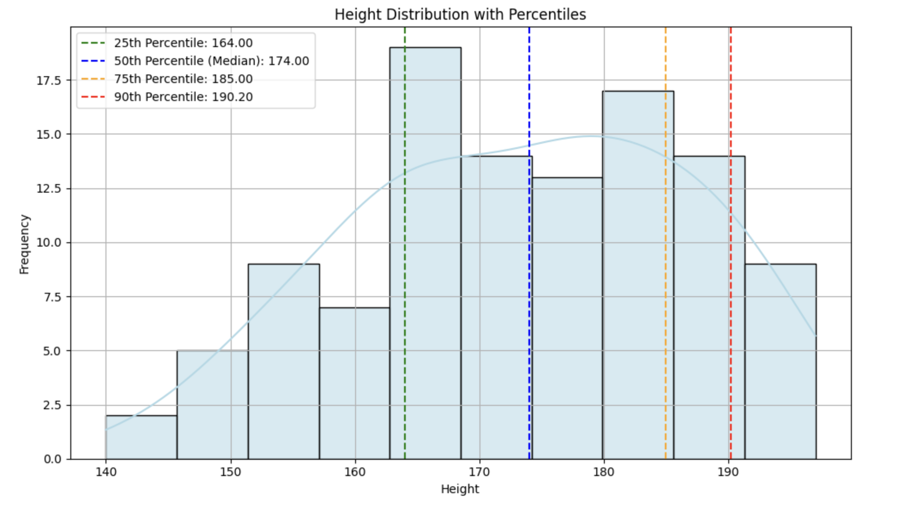
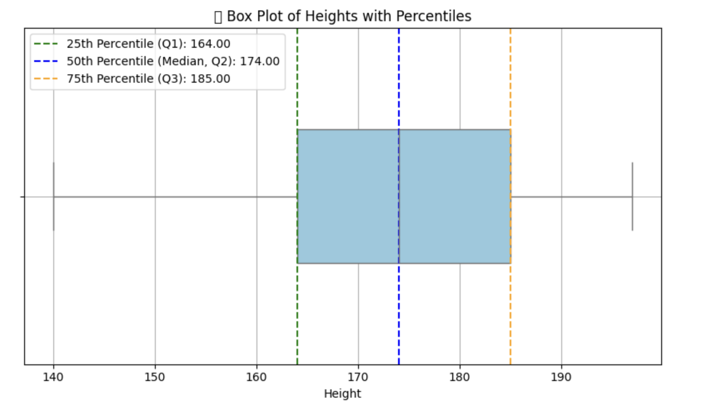
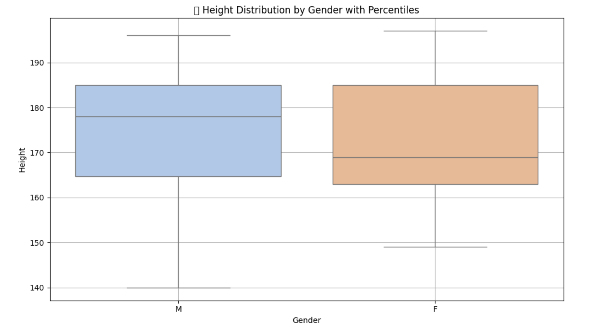
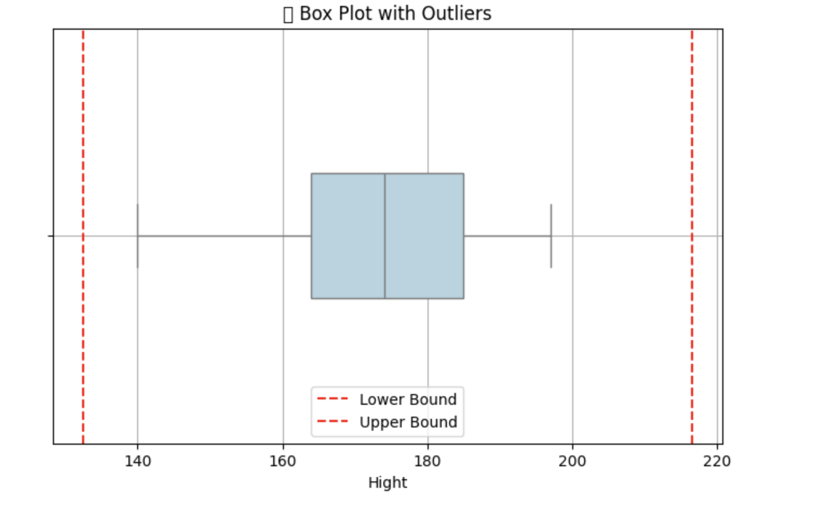

✅ Percentiles
📌 What Are Percentiles?
Percentiles are measures that divide a dataset into 100 equal parts. Each percentile tells you the relative position of a value within the data distribution.
- The k-th percentile is the value below which k% of the data falls
Example:
-
25th percentile (P25) → 25% of data is below this value.
-
50th percentile (P50) → Median (middle value).
-
75th percentile (P75) → 75% of data falls below this value.
-
90th percentile (P90) → 90% of data falls below this value.
-
100th percentile (P100) → 100% of data falls below this value.
🧠 Why Use Percentiles?:
Percentiles help answer:
-
How extreme or typical a value is
-
Where a value stands relative to others
-
Useful for outlier detection, ranking, and cut-off thresholds
📦 Real-World Examples#
🏫 Exam Scores:
- If your score is in the 90th percentile, you did better than 90% of the students.
🏥 Medical Growth Charts:
- A baby in the 40th percentile for height is taller than 40% of babies the same age.
💻 Website Load Time:
- "P95 latency = 3 seconds" means 95% of pages load faster than 3 seconds.
✅ How to Calculate Percentiles in Python (with Visualization)#
import pandas as pd
import numpy as np
import matplotlib.pyplot as plt
import seaborn as sns
# Example dataset
df = pd.read_csv("hight.csv")
heights = df["Hight"]
# Calculate percentiles
p25 = np.percentile(heights, 25)
p50 = np.percentile(heights, 50) # Median
p75 = np.percentile(heights, 75)
p90 = np.percentile(heights, 90)
# Plot
plt.figure(figsize=(10, 6))
sns.histplot(heights, bins=10, kde=True, color='lightblue', edgecolor='black')
# Draw percentile lines
plt.axvline(p25, color='green', linestyle='--', label=f'25th Percentile: {p25:.2f}')
plt.axvline(p50, color='blue', linestyle='--', label=f'50th Percentile (Median): {p50:.2f}')
plt.axvline(p75, color='orange', linestyle='--', label=f'75th Percentile: {p75:.2f}')
plt.axvline(p90, color='red', linestyle='--', label=f'90th Percentile: {p90:.2f}')
# Final touches
plt.title("Height Distribution with Percentiles")
plt.xlabel("Height")
plt.ylabel("Frequency")
plt.legend()
plt.grid(True)
plt.tight_layout()
plt.show()

Output Interpretation:
-
Left of P25: 25% of heights
-
Between P25 and P75: Middle 50% (interquartile range)
-
Above P90: Top 10% tallest individuals — possibly outliers or elite group
✅ Box Plot to Visualize Percentiles (Q1, Q2, Q3)#
import pandas as pd
import matplotlib.pyplot as plt
import seaborn as sns
# Load your dataset
df = pd.read_csv("hight.csv")
heights = df["Hight"]
# Plot
plt.figure(figsize=(8, 5))
sns.boxplot(x=heights, color="skyblue", width=0.4)
# Label percentiles
p25 = heights.quantile(0.25)
p50 = heights.median()
p75 = heights.quantile(0.75)
plt.axvline(p25, color='green', linestyle='--', label=f'25th Percentile (Q1): {p25:.2f}')
plt.axvline(p50, color='blue', linestyle='--', label=f'50th Percentile (Median, Q2): {p50:.2f}')
plt.axvline(p75, color='orange', linestyle='--', label=f'75th Percentile (Q3): {p75:.2f}')
# Title & Legend
plt.title("📦 Box Plot of Heights with Percentiles")
plt.xlabel("Height")
plt.legend()
plt.grid(True)
plt.tight_layout()
plt.show()

📌 Interpretation of Box Plot:
-
Left whisker: Minimum value (excluding outliers)
-
Box start: Q1 (25th percentile)
-
Line inside box: Median (Q2 or 50th percentile)
-
Box end: Q3 (75th percentile)
-
Right whisker: Maximum value (excluding outliers)
-
Dots outside whiskers: Outliers
✅ Grouped Box Plot (e.g., by Gender)#
import pandas as pd
import matplotlib.pyplot as plt
import seaborn as sns
# Load data
df = pd.read_csv("hight.csv")
# Check if 'Gender' column exists
if 'Gender' in df.columns:
plt.figure(figsize=(10, 6))
sns.boxplot(x='Gender', y='Hight', data=df, palette='pastel')
# Titles and labels
plt.title('📊 Height Distribution by Gender with Percentiles')
plt.xlabel('Gender')
plt.ylabel('Height')
plt.grid(True)
plt.tight_layout()
plt.show()
else:
print("❌ 'Gender' column not found in the dataset. Please check your data.")

📌 What You’ll See in This Plot:
-
Each box shows the distribution for one gender
-
Median line inside the box: 50th percentile
-
Box edges: 25th and 75th percentiles
-
Whiskers: Range of typical values
-
Dots beyond whiskers: Outliers
ℹ️ Use Case Example:
| Scenario | Best Metric |
|---|---|
| Comparing central value | Median (robust to outliers) |
| Analyzing spread & shape | Box Plot with percentiles |
| Detecting outliers or skewness | Box Plot & Mode |
✅ Step-by-Step: Outlier Detection Using IQR#
Formula:
-
IQR = Q3 − Q1
-
Lower Bound = Q1 − 1.5 × IQR
-
Upper Bound = Q3 + 1.5 × IQR
-
Outliers: Any value < Lower Bound or > Upper Bound
🔢 Example: Calculate Outliers from Height Data#
import pandas as pd
# Load your data
df = pd.read_csv("hight.csv")
heights = df["Hight"]
# Calculate Q1, Q3, and IQR
Q1 = heights.quantile(0.25)
Q3 = heights.quantile(0.75)
IQR = Q3 - Q1
# Calculate bounds
lower_bound = Q1 - 1.5 * IQR
upper_bound = Q3 + 1.5 * IQR
# Identify outliers
outliers = heights[(heights < lower_bound) | (heights > upper_bound)]
print("Q1 (25th percentile):", Q1)
print("Q3 (75th percentile):", Q3)
print("IQR:", IQR)
print("Lower Bound:", lower_bound)
print("Upper Bound:", upper_bound)
print("\n🚨 Outliers:\n", outliers)
Q1 (25th percentile): 164.0 Q3 (75th percentile): 185.0 IQR: 21.0 Lower Bound: 132.5 Upper Bound: 216.5
🚨 Outliers: Series([], Name: Hight, dtype: int64)
📦 Visualization with Outliers
import matplotlib.pyplot as plt
import seaborn as sns
plt.figure(figsize=(8, 5))
sns.boxplot(x=heights, color="lightblue", width=0.3)
plt.axvline(lower_bound, color='red', linestyle='--', label='Lower Bound')
plt.axvline(upper_bound, color='red', linestyle='--', label='Upper Bound')
plt.title("📦 Box Plot with Outliers")
plt.legend()
plt.grid(True)
plt.show()

🎯 Real-Time Use Case:#
Imagine this is a student height dataset in school:
-
Most students are between 130–160 cm (normal distribution)
-
A few entries like 90 cm (too short) or 200 cm (too tall) would be flagged as outliers (maybe measurement errors or rare cases)